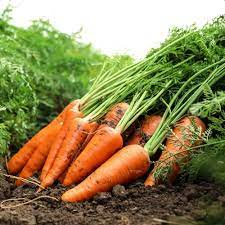
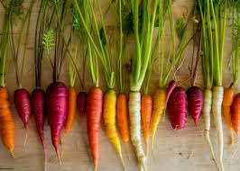
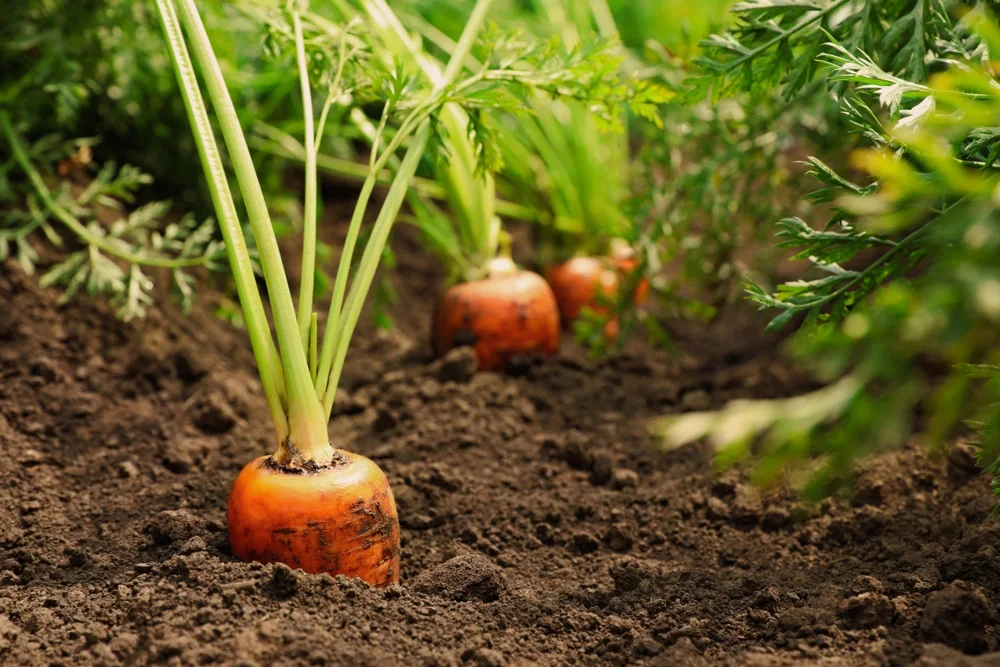

Carrot

Carrots are root vegetables that are easy to grow and packed with nutrients. Follow these steps to plant your own carrots and enjoy a bountiful harvest:
- Choose a sunny location with well-drained soil for your carrot bed.
- Prepare the soil by removing any rocks, weeds, or debris. Loosen the soil to a depth of about 8-10 inches and amend it with compost or organic matter to improve its fertility and texture.
- Sow carrot seeds directly into the prepared soil, following the recommended spacing and planting depth for the variety you have chosen.
- Cover the seeds with a thin layer of soil and gently firm it down. Water the bed thoroughly but gently to ensure good seed-to-soil contact.
- Keep the soil consistently moist during the germination period, which typically takes 1-3 weeks. Water the carrots regularly, providing about 1 inch of water per week.
- Thin the carrot seedlings when they are a few inches tall to allow proper spacing for the roots to develop. Aim for a final spacing of 2-3 inches between plants.
- Monitor the carrot bed for pests such as carrot flies or aphids, and take appropriate measures to control them if necessary.
- Harvest the carrots when they have reached the desired size. Gently loosen the soil around the carrots and lift them out by grasping the green tops and pulling. Brush off any excess soil and enjoy your homegrown carrots!
About Carrot
Carrots are widely cultivated and consumed worldwide. Here are some key aspects of carrots:
- Nutritional Value: Carrots are an excellent source of vitamins, particularly vitamin A, as well as dietary fiber and antioxidants. They contribute to eye health, immune function, and overall well-being.
- Root Vegetable: Carrots are classified as root vegetables, as the edible part of the plant is the taproot that grows underground.
- Varieties: Carrots come in various colors, including orange, purple, yellow, and white. Different varieties offer distinct flavors, textures, and culinary uses.
- Culinary Versatility: Carrots can be consumed raw or cooked and are used in a wide range of dishes, including salads, soups, stews, stir-fries, and desserts.
Benefits of Growing Carrots

Growing carrots in your garden can be a rewarding experience with several benefits:
- Homegrown Flavor: Freshly harvested carrots have a superior taste and sweetness compared to store-bought counterparts. You can enjoy the full flavor of carrots at their peak ripeness.
- Controlled Growing Conditions: By growing your own carrots, you have control over the cultivation practices. You can choose organic methods, avoid synthetic pesticides, and ensure the use of quality soil amendments.
- Cost Savings: Growing carrots can save you money in the long run, as the cost of purchasing carrot seeds or seedlings is often lower than buying carrots from the store over time.
- Health Benefits: Carrots are packed with nutrients and contribute to a healthy diet. They are low in calories, high in fiber, and provide essential vitamins and antioxidants that support overall well-being.
- Gardening Satisfaction: Growing your own carrots can be a satisfying and fulfilling experience. Tending to the plants, watching them grow, and harvesting your homegrown produce can bring joy and a sense of accomplishment.
- Teaching Opportunity: Growing carrots can be a valuable educational activity, especially for children. It teaches them about plant life cycles, food production, and the importance of fresh and nutritious food.